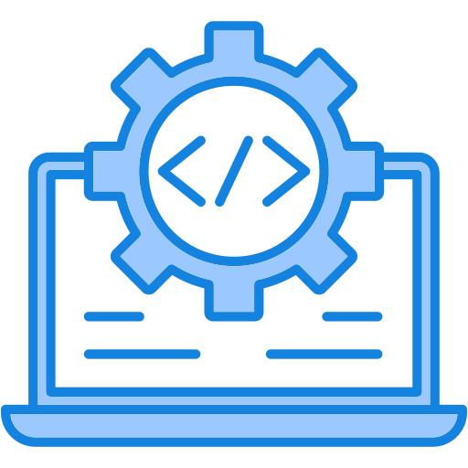
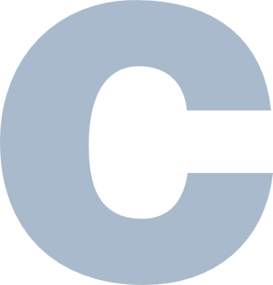
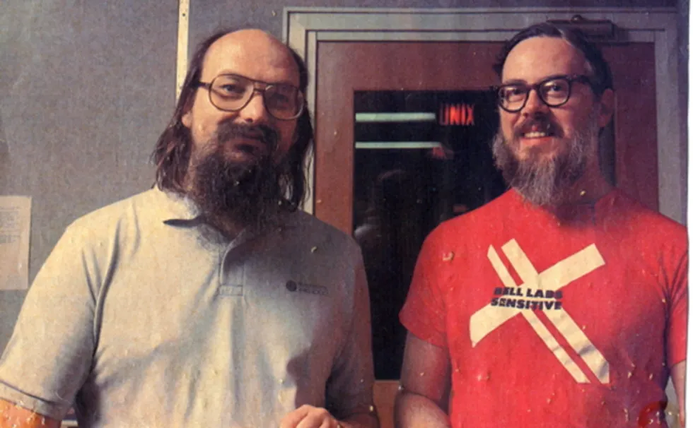
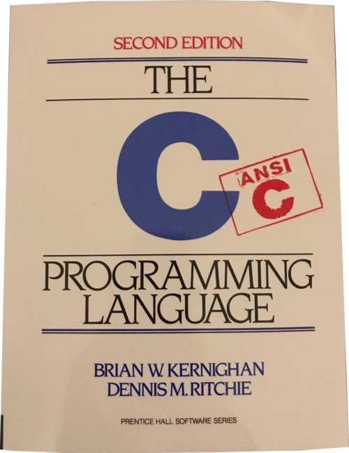
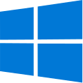
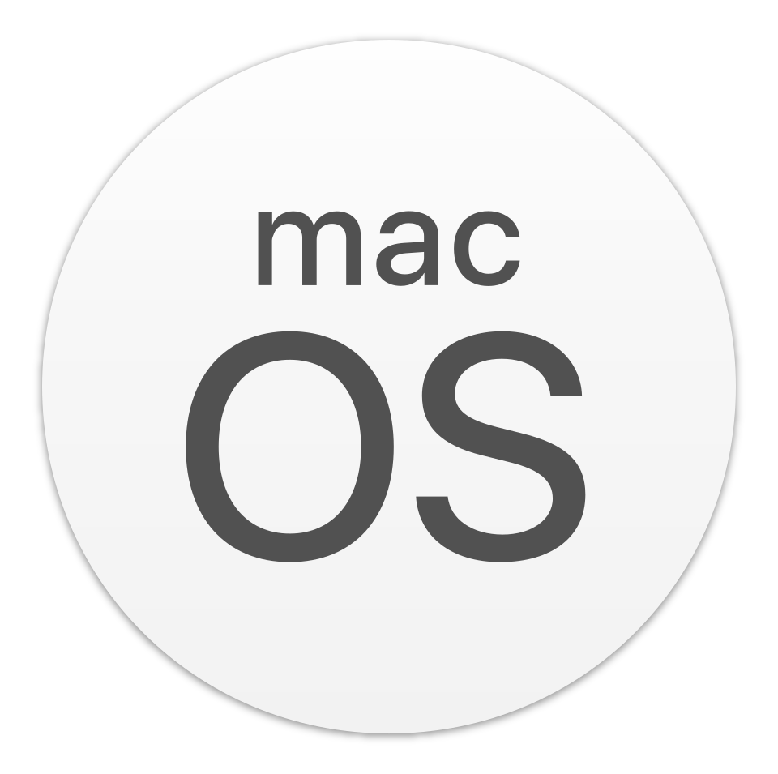

Aprender C

Atividade extensionista UNINTER
1. Introdução a conceitos de ciência da computação.
A Ciência da Computação nada mais é do que o estudo de como resolver problemas usando o computador.
Imagine o computador como um assistente extremamente rápido e obediente, mas que não tem iniciativa própria.
Para que ele faça algo, precisamos dar instruções passo a passo (o que chamamos de algoritmos).
A Ciência da Computação nos ensina a pensar de forma lógica para estruturar essas instruções e transformar ideias em programas funcionais.

1.1 O que é a linguagem C.
Os computadores entendem apenas uma "língua" muito básica chamada código binário ou linguagem de maquina (Machine Language ou ML)(composta por zeros e uns).
Como seria muito difícil e demorado escrever tudo dessa forma, usamos as linguagens de programação.
A Linguagem C é como uma "ponte" entre a forma como nós humanos pensamos e a forma como o computador funciona.
Criada na década de 1970, ela é uma das linguagens de programação mais fundamentais e influentes da história da computação.

Os computadores entendem apenas uma "língua" muito básica chamada código binário ou linguagem de maquina (Machine Language ou ML)(composta por zeros e uns).
Como seria muito difícil e demorado escrever tudo dessa forma, usamos as linguagens de programação.
A Linguagem C é como uma "ponte" entre a forma como nós humanos pensamos e a forma como o computador funciona.
Criada na década de 1970, ela é uma das linguagens de programação mais fundamentais e influentes da história da computação.

Brian Kernighan e Dennis RitchieA linguagem C é uma linguagem de programação de sistemas, compilada, imperativa e procedural.
Criada por Dennis Ritchie enquanto trabalhava na empresa AT&T Bell Labs, ela foi criada para facilitar o desenvolvimento do sistema operacional UNIX, o qual era originalmente escrito em assembly, o que dificultava a portabilidade entre a grande variedade de arquiteturas de CPU da época.

1.2 Por que C?
Aprender C é equivalente a aprender a pilotar um carro de corrida com câmbio manual: você precisa entender exatamente como o motor e as peças funcionam para ter o controle total.
Ao contrário de linguagens mais modernas que "escondem" os detalhes técnicos do computador para facilitar o uso, a linguagem C te dá acesso direto à memória e ao hardware.
Por isso, quem aprende C desenvolve uma base muito sólida e entende de verdade o que acontece "debaixo do capô" da máquina.
1.3 Onde C é usado? É relevante atualmente?
C continua sendo uma das linguagens mais importantes e utilizadas no mundo moderno. Ela é usada onde precisamos de extrema velocidade e eficiência:
Sistemas Operacionais: Os "corações" do Windows, Linux e macOS foram construídos em C.
Dispositivos Inteligentes (IoT): Micro-ondas, carros modernos, robôs e dispositivos médicos usam C por conta do baixo uso de memória.
Jogos e Motores Gráficos: Para garantir quadros por segundo sem travamentos.
você pode não ver a linguagem C na superfície dos aplicativos do dia a dia, mas ela é a estrutura que faz quase toda a tecnologia moderna funcionar nos bastidores.


